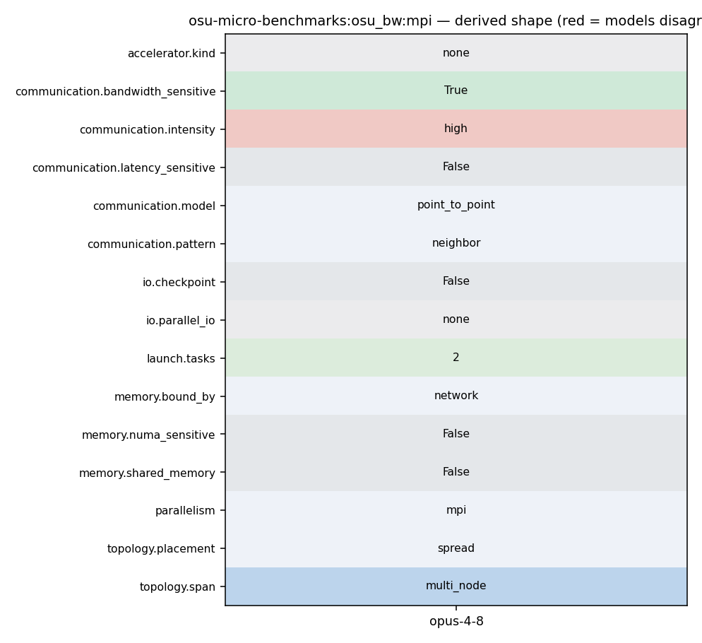

mpirun_rsh -np 2 -hostfile hostfile osu_bw
175 * repeated for several iterations and the bandwidth is calculated based on 176 * the elapsed time (from the time sender sends the first message until the 177 * time it receives the reply back from the receiver) and the number of bytes 178 * sent by the sender. The objective of this bandwidth test is to determine 179 * the maximum sustained date rate that can be achieved at the network level. 180 * Thus, non-blocking version of MPI functions (MPI_Isend and MPI_Irecv) are 181 * used in the test. This test is available here. 182
233 } 234 #endif /* #ifdef _ENABLE_CUDA_KERNEL_ */ 235 236 for (j = 0; j < window_size; j++) { 237 if (options.buf_num == SINGLE) { 238 MPI_CHECK(MPI_Isend(s_buf[0], num_elements, 239 omb_curr_datatype, 1, 100, 240 omb_comm, request + j)); 241 } else { 242 MPI_CHECK(MPI_Isend(s_buf[j], num_elements, 243 omb_curr_datatype, 1, 100, 244 omb_comm, request + j)); 245 } 246 } 247 MPI_CHECK(MPI_Waitall(window_size, request, reqstat)); 248 249 MPI_CHECK(MPI_Recv(r_buf[0], 1, MPI_CHAR, 1, 101, 250 omb_comm, &reqstat[0]));
167 -t 4:6 // sender processes = 4 and receiver processes = 6 168 -t 2: // not defined 169 170 osu_bw - Bandwidth Test 171 * The bandwidth tests are carried out by having the sender sending out a 172 * fixed number (equal to the window size) of back-to-back messages to the 173 * receiver and then waiting for a reply from the receiver. The receiver 174 * sends the reply only after receiving all these messages. This process is 175 * repeated for several iterations and the bandwidth is calculated based on 176 * the elapsed time (from the time sender sends the first message until the 177 * time it receives the reply back from the receiver) and the number of bytes 178 * sent by the sender. The objective of this bandwidth test is to determine 179 * the maximum sustained date rate that can be achieved at the network level. 180 * Thus, non-blocking version of MPI functions (MPI_Isend and MPI_Irecv) are 181 * used in the test. This test is available here. 182
235 236 for (j = 0; j < window_size; j++) { 237 if (options.buf_num == SINGLE) { 238 MPI_CHECK(MPI_Isend(s_buf[0], num_elements, 239 omb_curr_datatype, 1, 100, 240 omb_comm, request + j)); 241 } else { 242 MPI_CHECK(MPI_Isend(s_buf[j], num_elements, 243 omb_curr_datatype, 1, 100, 244 omb_comm, request + j)); 245 } 246 } 247 MPI_CHECK(MPI_Waitall(window_size, request, reqstat)); 248 249 MPI_CHECK(MPI_Recv(r_buf[0], 1, MPI_CHAR, 1, 101, 250 omb_comm, &reqstat[0])); 251 252 #ifdef _ENABLE_CUDA_KERNEL_ 253 if (options.src == 'M') { 254 touch_managed_src_window(r_buf, size, window_size, 255 SUB); 256 } 257 #endif /* #ifdef _ENABLE_CUDA_KERNEL_ */ 258 if (i >= options.skip &&
233 } 234 #endif /* #ifdef _ENABLE_CUDA_KERNEL_ */ 235 236 for (j = 0; j < window_size; j++) { 237 if (options.buf_num == SINGLE) { 238 MPI_CHECK(MPI_Isend(s_buf[0], num_elements, 239 omb_curr_datatype, 1, 100, 240 omb_comm, request + j)); 241 } else { 242 MPI_CHECK(MPI_Isend(s_buf[j], num_elements, 243 omb_curr_datatype, 1, 100, 244 omb_comm, request + j)); 245 } 246 } 247 MPI_CHECK(MPI_Waitall(window_size, request, reqstat)); 248 249 MPI_CHECK(MPI_Recv(r_buf[0], 1, MPI_CHAR, 1, 101, 250 omb_comm, &reqstat[0]));
301 ADD); 302 } 303 #endif /* #ifdef _ENABLE_CUDA_KERNEL_ */ 304 for (j = 0; j < window_size; j++) { 305 if (options.buf_num == SINGLE) { 306 MPI_CHECK(MPI_Irecv(r_buf[0], num_elements, 307 omb_curr_datatype, 0, 100, 308 omb_comm, request + j)); 309 } else { 310 MPI_CHECK(MPI_Irecv(r_buf[j], num_elements, 311 omb_curr_datatype, 0, 100, 312 omb_comm, request + j)); 313 } 314 } 315 MPI_CHECK(MPI_Waitall(window_size, request, reqstat)); 316 317 #ifdef _ENABLE_CUDA_KERNEL_ 318 if (options.dst == 'M') {
113 break; 114 } 115 116 if (numprocs != 2) { 117 if (myid == 0) { 118 fprintf(stderr, "This test requires exactly two processes\n"); 119 } 120 121 omb_mpi_finalize(omb_init_h); 122 exit(EXIT_FAILURE); 123 } 124 125 #ifdef _ENABLE_CUDA_KERNEL_ 126 if (options.src == 'M' || options.dst == 'M') {
935 * MPI_Finalize. 936 * 937 * Example: 938 * - time mpirun_rsh -np 2 -hostfile hostfile osu_hello 939 940 ROCm, CUDA and OpenACC Extensions to OMB 941 ----------------------------------------
175 * repeated for several iterations and the bandwidth is calculated based on 176 * the elapsed time (from the time sender sends the first message until the 177 * time it receives the reply back from the receiver) and the number of bytes 178 * sent by the sender. The objective of this bandwidth test is to determine 179 * the maximum sustained date rate that can be achieved at the network level. 180 * Thus, non-blocking version of MPI functions (MPI_Isend and MPI_Irecv) are 181 * used in the test. This test is available here. 182
65 OMB_CHECK_NULL_AND_EXIT(omb_lat_arr, "Unable to allocate memory"); 66 } 67 68 omb_init_h = omb_mpi_init(&argc, &argv); 69 omb_comm = omb_init_h.omb_comm; 70 if (MPI_COMM_NULL == omb_comm) { 71 OMB_ERROR_EXIT("Cant create communicator"); 72 } 73 MPI_CHECK(MPI_Comm_rank(omb_comm, &myid)); 74 MPI_CHECK(MPI_Comm_size(omb_comm, &numprocs)); 75 76 omb_graph_options_init(&omb_graph_options); 77 if (0 == myid) {
235 236 for (j = 0; j < window_size; j++) { 237 if (options.buf_num == SINGLE) { 238 MPI_CHECK(MPI_Isend(s_buf[0], num_elements, 239 omb_curr_datatype, 1, 100, 240 omb_comm, request + j)); 241 } else { 242 MPI_CHECK(MPI_Isend(s_buf[j], num_elements, 243 omb_curr_datatype, 1, 100, 244 omb_comm, request + j)); 245 } 246 } 247 MPI_CHECK(MPI_Waitall(window_size, request, reqstat)); 248 249 MPI_CHECK(MPI_Recv(r_buf[0], 1, MPI_CHAR, 1, 101, 250 omb_comm, &reqstat[0])); 251 252 #ifdef _ENABLE_CUDA_KERNEL_
175 * repeated for several iterations and the bandwidth is calculated based on 176 * the elapsed time (from the time sender sends the first message until the 177 * time it receives the reply back from the receiver) and the number of bytes 178 * sent by the sender. The objective of this bandwidth test is to determine 179 * the maximum sustained date rate that can be achieved at the network level. 180 * Thus, non-blocking version of MPI functions (MPI_Isend and MPI_Irecv) are 181 * used in the test. This test is available here. 182
935 * MPI_Finalize. 936 * 937 * Example: 938 * - time mpirun_rsh -np 2 -hostfile hostfile osu_hello 939 940 ROCm, CUDA and OpenACC Extensions to OMB 941 ----------------------------------------